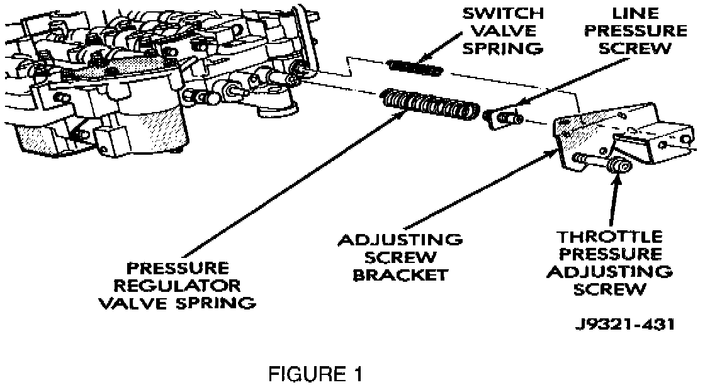

A/T - Buzz/Whining in Reverse When Cold
NUMBER: 21-08-99GROUP: Transmission
DATE: April 30, 1999
SUBJECT:
"Buzz", "Whining", Or "Moaning" Like Noise From A Cold Transmission When Reverse Is Selected.
OVERVIEW:
This bulletin involves replacing the transmission regulator valve.
MODELS:
1996 - 1999 (AB) Ram Van
1996 - 1999 (AN) Dakota
1996 - 1999 (BR/BE) Ram Truck
1998 - 1999 (DN) Durango
1996 - 1999 (TJ) Wrangler
1996 - 1999 (XJ) Cherokee
1996 - 1998 (ZJ) Grand Cherokee
1999 (WJ) Grand Cherokee
NOTE:
THIS INFORMATION APPLIES TO VEHICLES EQUIPPED WITH A RE OR RH AUTOMATIC TRANSMISSION.
SYMPTOM/CONDITION:
Some vehicles may exhibit an intermittent noise from the transmission when reverse gear is selected. This noise has been described as a "buzz", whining", or "moaning" like noise. The noise is most noticeable when transmission fluid temperature is below 38 C. (100 F.). The condition is caused by a resonance of the transmission regulator valve system.
Other items may cause regulator valve resonance, including air ingestion into the valve body or out of specification parts. These two items may be the result a possible cracked pump housing, a torn pump gasket, an under filled transmission, a restricted fluid filter or cooler flow, or an out of specification valve and/or valve body. You should remember these additional items / components when you perform your diagnosis.
Vehicles built prior to August 1, 1995 may experience this condition if either a transmission valve body or an entire automatic transmission was replaced with components manufactured after August 1, 1995.
DIAGNOSIS:
Using the Diagnostic Scan Tool (DRB III(R)) with the appropriate Diagnostics Procedure Manual, verify all engine and transmission systems are functioning as designed. If Diagnostic Trouble Codes (DTC's) are present, record them on the repair order and repair as necessary before proceeding further with this bulletin.
For 1996 and 1997 model year product, review Technical Service Bulletin 21-11-97 Rev A to determine if it applies to this vehicle before attempting to complete the analysis or repairs described in this bulletin.
In most instances, the sump temperature of vehicles exhibiting transmission regulator valve resonance in reverse has been less than 38 C. (100 F). If possible, allow the suspect vehicle to remain parked in a cool place overnight. Then perform the following steps:
1. Set the vehicle parking brake.
2. Start the engine (make certain windows are closed, to eliminate outside noise).
3. With brakes applied, place the transmission selector lever in reverse.
4. Listen for any buzz/moaning/whining like noises as the transmission sump temperature rises to normal operating temperature (180 - 210 degrees F).
5. If a buzz/moaning/whining like noise is present, perform the Repair Procedure.
PARTS REQUIRED:
1 04130169 Valve, Steel Transmission Regulator
1 02464324 Gasket, Transmission Pan
AR 05010124AA Fluid, ATF Plus 3, Type 7176E
EQUIPMENT REQUIRED:
1 C-3763 Gauge Tool, Throttle Pressure Adjustment
REPAIR PROCEDURE:
1. Following the procedures in the applicable service manual, remove the valve body from the transmission (Refer to Group 21 of the appropriate Service Manual - TRANSMISSION AND TRANSFER CASE - AUTOMATIC TRANSMISSION section - REMOVAL AND INSTALLATION).

2. Remove the screws holding the adjusting screw bracket and replace the regulator valve with p/n 04130169 (Figure 1). Install the adjusting screw bracket
3. Verify and adjust, if necessary, both the line pressure and the throttle pressure settings by following the procedures in the service manual (Refer to Group 21 of the appropriate Service Manual - TRANSMISSION AND TRANSFER CASE - AUTOMATIC TRANSMISSION section - ADJUSTMENTS - VALVE BODY).
4. Following the procedures in the appropriate Service Manual, re-install the valve body with the new regulator valve into the transmission.
5. After filling the transmission with the proper automatic transmission fluid, and verifying correct fill level, check the throttle valve cable adjustment. Make appropriate adjustments, if necessary, following the applicable service manual procedure (Refer to Group 21 of the appropriate Service Manual - TRANSMISSION AND TRANSFER CASE - AUTOMATIC TRANSMISSION section - ADJUSTMENTS - TRANSMISSION THROTTLE VALVE CABLE ADJUSTMENT).
POLICY: Reimbursable within the provisions of the warranty.
TIME ALLOWANCE:
Labor Operation No: 21-95-01-90 1.2 Hrs.
FAILURE CODE: P8 - New Part